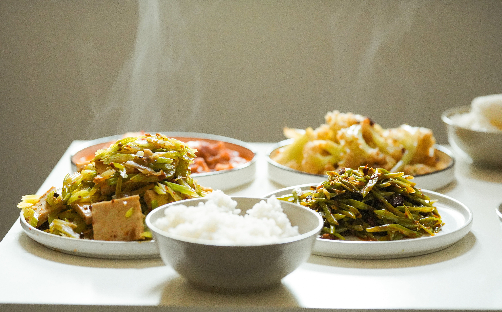

<!-- Content -->
<div id="content" class="col-8 col-12-medium">
	
	<!-- Post -->
	<article class="box post">
		<header>
			<h3>Conseils et explications pour la cuisine du quotidien</h3>
		</header>
		<span class="image featured"></span>
		<!-- <h3>Right is also not left</h3> -->
		<p>Une fâcheuse tendance à râter tout vos plats ? <em>Trop salé, trop sucré, ou simplement pas assez de goût ?</em> Mais comment font certains, avec des choses simples, pour réussir des plats qui mette tout le monde d'accord?</p>
		<p>Si vous vous reconnaissez, ce site peut peut-être vous aider. Ici, il n'est pas question de faire de vous un grand chef: c'est un métier. Mais avec quelques petites choses très simples, difficiles à deviner si personne ne vous les a apprises, il est possible de cuisiner <em>des plats de grande qualité pour sa famille et ses amis</em>. Et vraiment, c'est à la portée de tout de monde. À votre portée.</p>
		<p>Ce site est divisée en trois parties, que vous pouvez explorer à votre guise. <em>Les Bases</em> expliquent des aspects plutôt théoriques: qu'est-ce qu'une saveur ? que faut-il savoir pour les assembler ? pourquoi la façon de cuire influence-t-elle le goût ? La partie sur <em>Les Produits</em> décrit où s'en procurer de bons et les erreurs à éviter. Enfin, <em>La Batterie</em> est consacrée à tout le matériel de cuisine: casseroles, poêles, ustensiles…</p>
	</article>
	
</div>